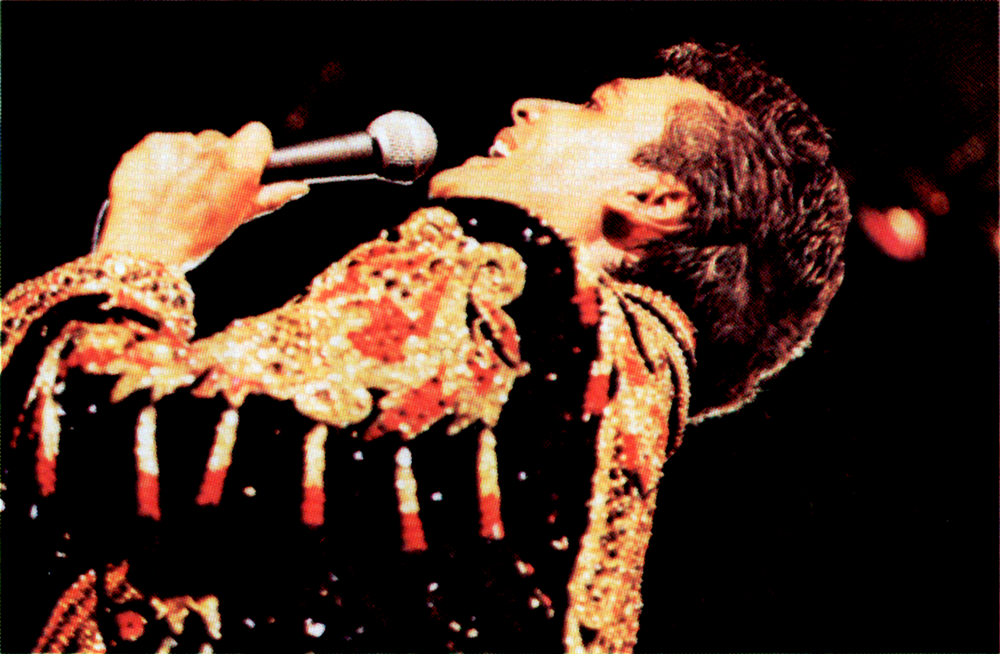
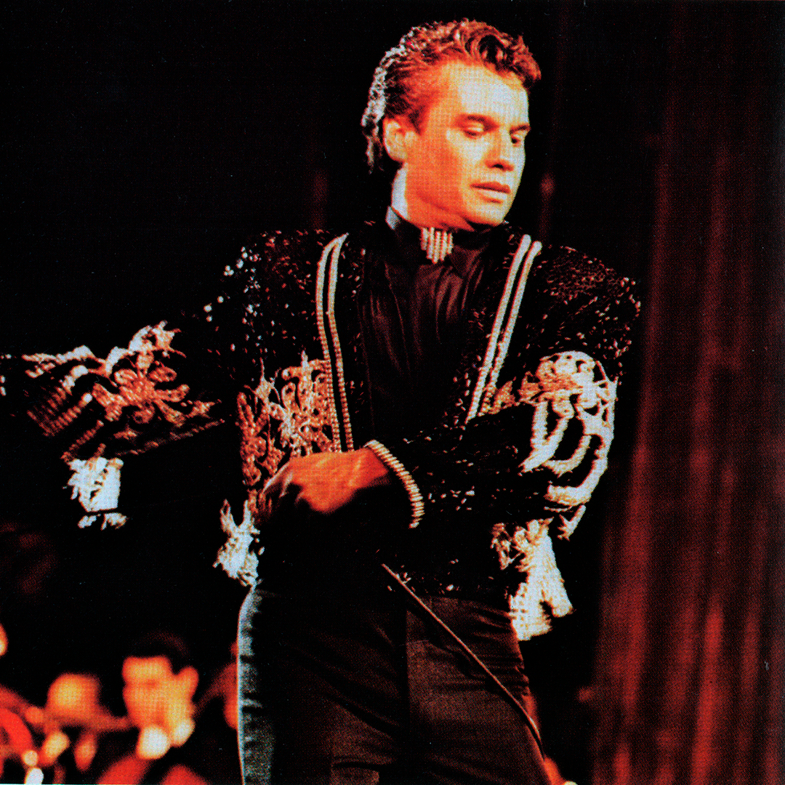
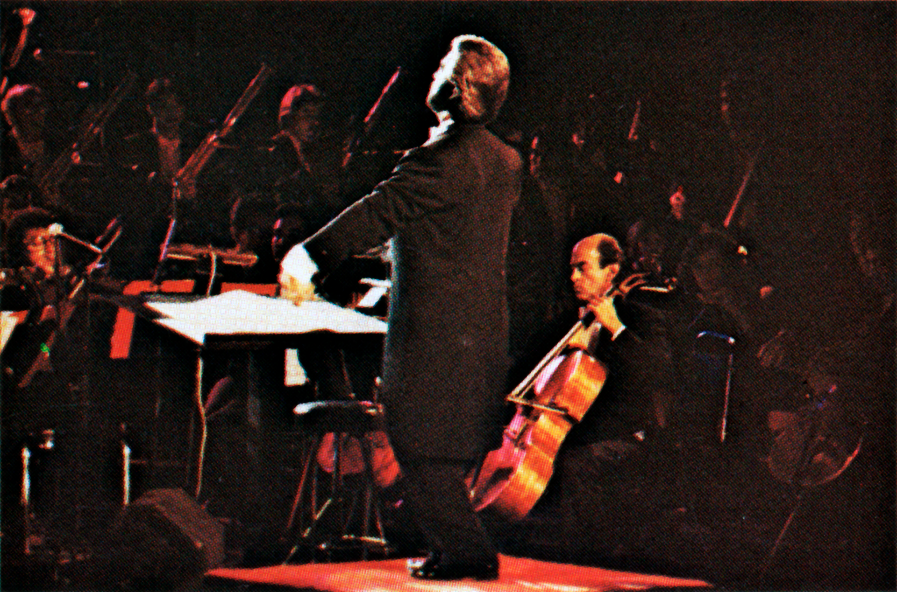
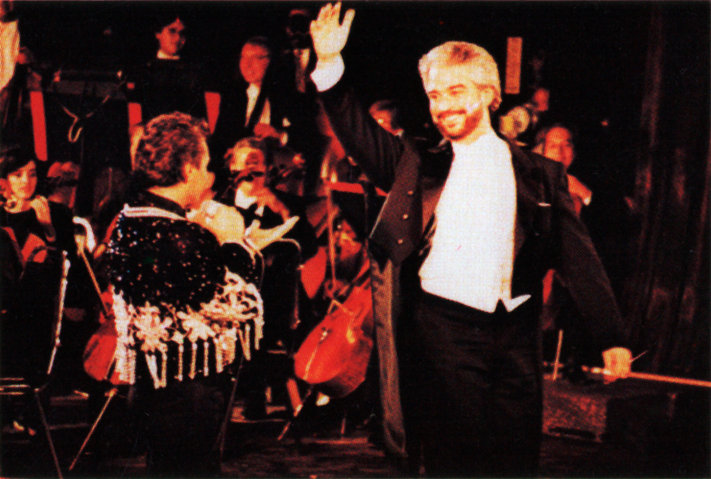
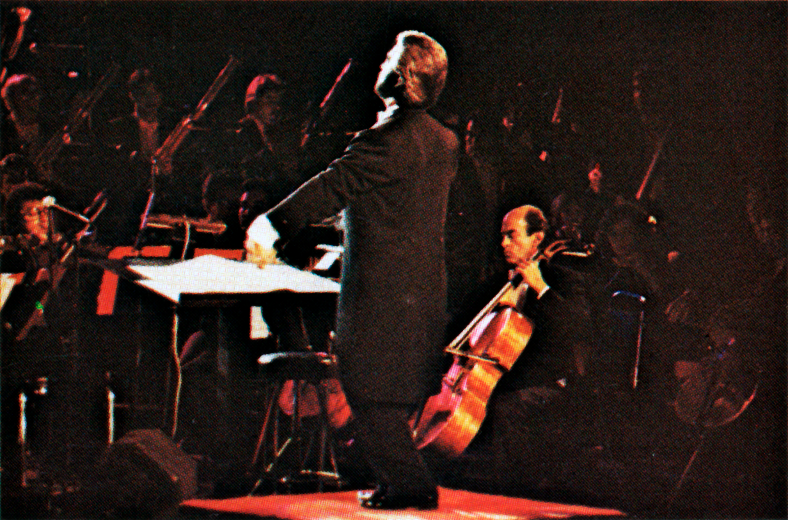
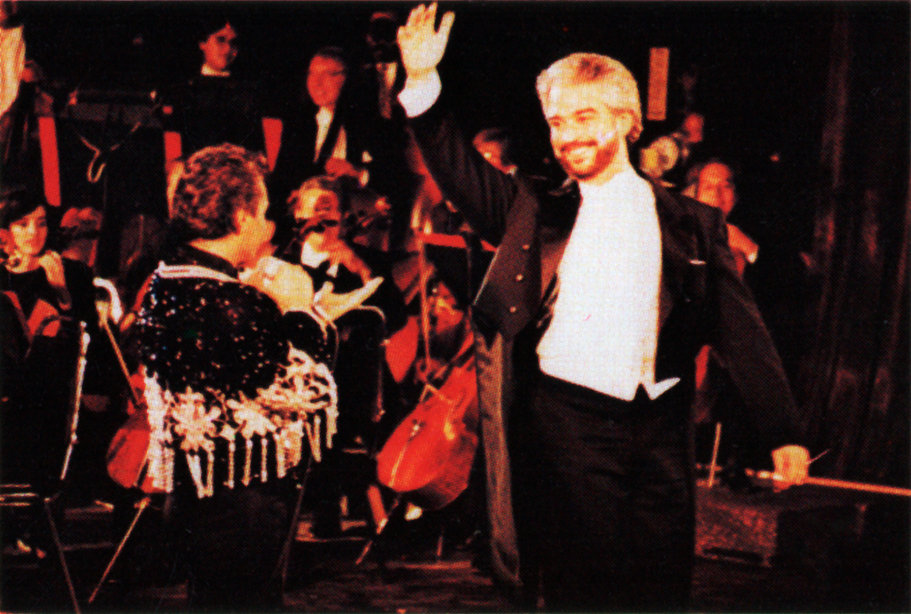

|  |
En el Palacio
de Bellas Artes |
Noches de Gloria: El Debut de Un Divo

Hacia 1985, Juan Gabriel y su entonces manager (María de la Paz) buscaban que El Divo de Juárez llegara al recinto cultural más importante de México, para entonces Juan Gabriel se encontraba en uno de los mejores momentos de su carrera, se habí estrenado recientemente su gran éxito "Querida", que le abrió las puertas de los grandes centros nocturnos como "El Patio" y, más tarde, "El Premier". Fueron cinco años los que Juan Gabriel luchó por lograr presentarse en el recinto que, para entonces, estaba reservado para la opera y, en ocasiones exclusivas, algunos homenajes a los grandes que con el tiempo abandonaban éste mundo. Las protestas no se hicieron esperar, los grandes criticos mexicanos le hicieron saber al propio Juan Gabriel su inconformidad ante el deseo de Alberto Aguilera Valadez, argumentando que su presencia en el recinto convertiría al Palacio de Bellas Artes en un "Palenque de Televisa".
1990, la espera había terminado, la administración del Instituto Nacional de Bellas Artes (INBA) por fin le cedió a Juan Gabriel cuatro noches para presentarse en la sala principal del Palacio de Bellas Artes. La emoción invadió a Juan Gabriel, de inmediato buscó a su querido amigo Eduardo Magallanes para iniciar con los preparativos. Fue del 9 al 12 de mayo de 1990 cuando Juan Gabriel logró conquistar al público mexicano; niños, adultos, ancianos, el entonces presidente, Carlos Salinas de Gortari, y su esposa, Cecilia Occelli González, se entregaron esa noche a Juan Gabriel tanto como él se entregó a ellos, el idolo de multitudes había logrado lo que por años soñó, le bastaron cuatro noches para lograr que todos quienes mostraron su inconformidad con las presentaciones de "El Divo de Juárez" se volvieran parte del público de Juan Gabriel, demostrando lo que por años el propio Alberto defendió:
"La música es una
V E R D A D
que mueve a la gente"
"El Otro Protagonista De La Noche"
Por: Carlos Monsivais
"Él, como suele decirse antes de los discursos interminables, no necesita presentación. Por lo menos no en éste recinto, ni en el país donde es desde casí dos décadas figura imprescindible y polémica.
Lo que tal vez, por su variedad y recomposición constante, sí necesita presentacón es su público, el más pluriclasista y multigeneracional que un artista popular ha conocido en México desde las épocas de Pedro Infante,
un público de admiradores que a lo mejor empezaron como impugnadores, de adolescentes de la barriada y yuppies, de desempleados y desempleables, de críticos acerbos que van a oirlo 'porque los trajeron' aunque acudan solos, de adhesiones de la familia
entera que alguna vez fueron reyertas de sobremesa. ¿Pero cómo puedes escuchar a ese cantante?/Con todo respeto, papá esa es cosa mía...
A través de la metamorfosis y las ampliaciones del público de Juan Gabriel, es posible observar, en corte transversal, etapas del proceso de gusto popular de las sociedaddes de México, al que
ha contribuido en modo significativo un compositor y cantante de 40 años, nacido en Michoacán, crecido en Ciudad Juárez, y formado en la observacián cuidadosa del Star System de la canción mexicana, y en las disqueras,
los conciertos, los programas televisivos, los palenques, la relación con el trinfuo y el escandálo. A éste público le ha costado su esfuerzo integrarse, ha precisado de tolerancia para modificar o adquirir preferencias,
ha requerido de chistes para admitir sus nuevas devociones, ha oído sin cesar grabaciones al punto de confundirlas con su pasado más entrañable, ha ido a las presentaciones en vivo con el ánimo de quien corre una aventra (¡Qué raro se siente
cuando en vez de comerciales te pasan intermedios!), y ha calificado en la práctica a un conjunto de canciones y a su intérprete y creador de 'repertorio nacional sobresaliente'.
El público de Juan Gabriel fué al principio muy sectorial, de jovencitas que entonaban "No Tengo Dinero", enamoradas de las canciones que al no excluirlas lingũisticamente las incorporaban del todo, ávidas de celebraciones de amor, sencillo, será mañana o pasado mañana.
Casi de inmediato se le agregoó la provincia, definida aquí como los conjuntos móviles que van de una ciudad a otra, de un país a otro, de una tradición a su reemplazo funcional. Y al público lo expandieron las hostilidades y resistencia al cantante, lo persuadieron de maneras varias los intérpretes de Juan Gabriel (Lola Beltrán,
Lucha Villa, María Victoria, Lupita D´Alessio, Rociío Dúrcal, Lucía Méndez, José José, Daniela Romo, Isabel Pantoja, Angélica María, Bambino, María Marí Serra Lima.), y lo distinguió la adicción crecente de una voz exasperada, tierna, arrebatada, tan acorde con los matices y
variaciones de su material.
Al ir combinando géneros musicales, Juan Gabriel añadió también horas hábiles a la ejecución de su repertorio, que ya abarcaba el día entero, de las amas de casa frente a la radio en la mañana a los traileros y noctámbulos en la madrugada. Las canciones rancheras de Juan Gabriel ratificaron lo consagrado por José
Alfredo Jiménez, lo ranchero como el cruce de las tradiciones de la desesperanza teatral, qué caso tiene sufrir si no se goza, se me olvidó otra vez que sólo yo te quise. Y cada éxito de Juan Gabriel, el vendedor número uno de discos, lo afirma como un fénomeno institucional, el gran compositor popular que es una industria por sí solo, el estilo que
algo o mucho resume de estos años, donde las canciones hacen las veces de escenarios, loas pasiones eternas que duran una semana, la estación de autobuses como la patria chica, los mercados de discos com los aprovisionamientos de ilusiones perdidas, las fiestas del pueblo reconstruidas en el departamento de la unidad habitacional, los reventones con roch pesado donde al final irrumpen dramáticamente las viejas y nuevas canciones mexicanas.
El público sigue extendiéndose, conoce un clímax con 'Querida', deja de ser reconocible a simple vista y a simple oído, le interesan del ídolo las canciones y el modo de interpretarlas a fondo, colma centros de lujo, palenques y estadios, y hoy representa un convenio del justo, de la adiración, de la memoria compartida.
¿Y para quéseguir cuando ha llegado el momento de poner entre paréntesis nuestra celosa individualidad y añadirnos durante unas horas al público de Juan Gabrel?
"Fue un proyecto ambicioso.
Un concierto épico y polémico,
del que no teniamos referente y
no sabíamos que iba a pasar."
Enrique Patrón de Rueda
 



Juan Gabriel | El Divo Eterno